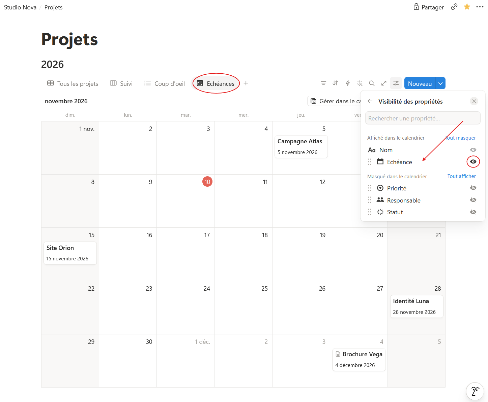

Calendrier, galerie, chronologie
Étape 1 : comprendre
Trois autres vues donnent une lecture plus visuelle de la base. Elles ont une condition : il faut que la base contienne la bonne information.
| Vue | À quoi elle ressemble | Ce qu'il faut dans la base |
|---|---|---|
| Calendrier (Calendar) | Un mois, avec chaque entrée placée à sa date. | Une propriété Date, par exemple l'Échéance. |
| Galerie (Gallery) | Des cartes avec une image en haut, comme un catalogue. | De préférence une image : une couverture ou une image dans la page. |
| Chronologie (Timeline) | Des barres sur une ligne du temps, de la date de début à la date de fin. | Une période : une date de début et une date de fin. |
Dans le calendrier, tu peux aussi faire glisser une entrée à un autre jour : sa date change. Dans la chronologie, tu peux étirer une barre pour allonger un projet.
Si la base n'a pas de propriété Date, Notion te proposera d'en créer une au moment de créer la vue.
Calendrier pour les échéances, galerie pour les contenus visuels, chronologie pour les périodes.
Astuce : la galerie est idéale pour une base de ressources (modèles, logos, photos) ou pour un portfolio de projets. Pour des tâches, le Kanban ou le tableau restent plus pratiques.
Projets dans le temps et en images
Voici la base « Projets » en calendrier, en galerie et en chronologie. Dans la chronologie, chaque barre va du début du projet à son échéance.
En calendrier, Lucas voit que la Campagne Atlas est tombée le 5 novembre et que Luna arrive le 28. En chronologie, Emma voit que Site Orion a commencé fin octobre et chevauche Luna : deux projets en parallèle, à anticiper.
Créer la vue « Échéances »
Quelle vue répond le mieux à chaque besoin ?
- Dans ta base « Projets », clique sur + à droite des onglets et choisis Calendrier.
- Si Notion demande quelle date utiliser, choisis « Échéance ». Nomme la vue « Échéances ».

- Fais glisser « Identité Luna » du 28 au 27 novembre. Ouvre le projet : l'échéance a changé.
- Remets-le au 28 novembre.
Attention : une chronologie sans date de début n'affiche que des points. Pour de vraies barres, ajoute une propriété « Début » ou utilise une date avec date de fin (option « Date de fin » dans la propriété Date).
Exercice · dans Notion
La vue « Échéances »
- Ajoute une vue Calendrier nommée « Échéances », basée sur la propriété Échéance.
- Déplace un projet d'un jour, puis remets-le.
- Facultatif : ajoute une vue Galerie et observe les cartes.
Résultat attendu : la vue « Échéances » affiche le mois de novembre avec Site Orion le 15, Identité Luna le 28 et Campagne Atlas le 5. Ta base a maintenant au moins trois vues.
Étape 3 : vérifier
Objectif de la leçon
Tu sais maintenant afficher ta base en calendrier, en galerie ou en chronologie, et choisir la vue adaptée.
Choisis une réponse avant de valider.
Le calendrier place chaque entrée à une date : sans propriété Date, il n'a rien à afficher.
Choisis une réponse avant de valider.
La chronologie dessine chaque projet comme une barre, de son début à sa fin : les chevauchements sautent aux yeux.